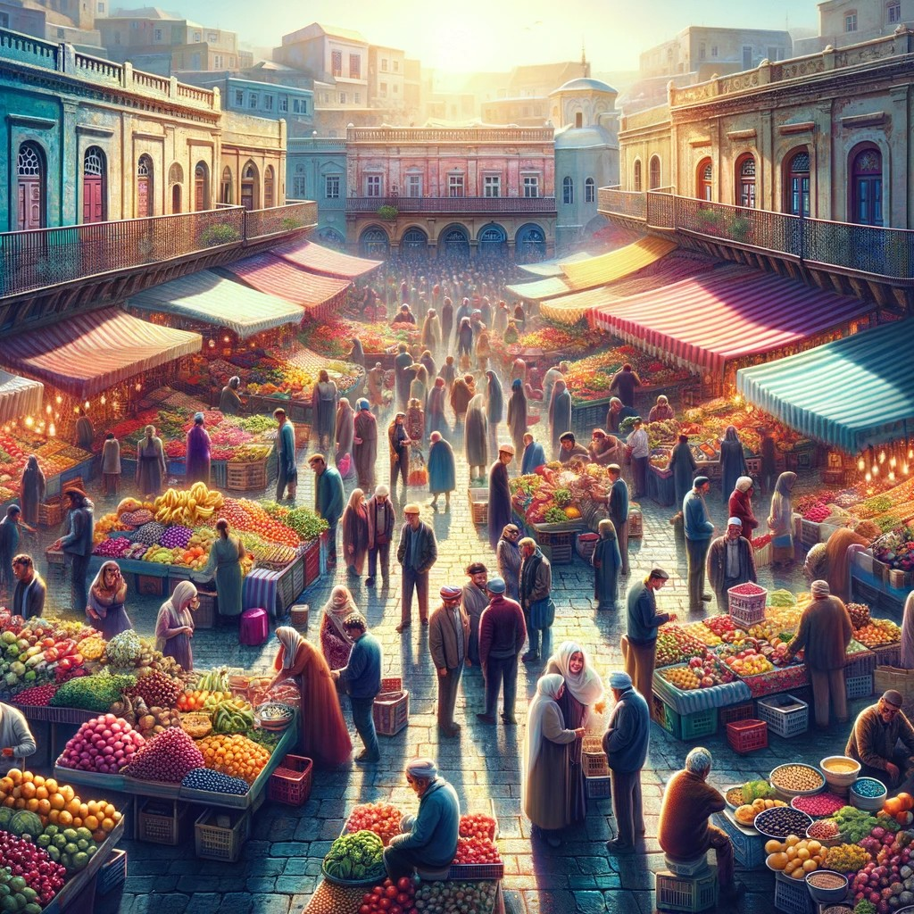

AI性格測驗旅遊建議
Demo: 在一些問題之後，我們把使用者分成內向和外向並分別給他們設計一套行程
題目一：神秘的森林
你走進了一片神秘的森林，樹木茂密，陽光透過樹葉灑下斑駁的光影。當你穿過森林，你會看到...
古老的廢墟
美麗的花田
題目二：寧靜的湖泊
你繼續在森林中前行，發現了一個寧靜的湖泊，你會...
獨自欣賞湖泊的美景
邀請陌生人一起划船
題目三：古老的鏡子
打開盒子後，你發現裡面有一面古老的鏡子。當你凝視鏡子時，你看到...
平靜的寺院
熱鬧的市場

生成適合您的AI旅遊建議
AI: